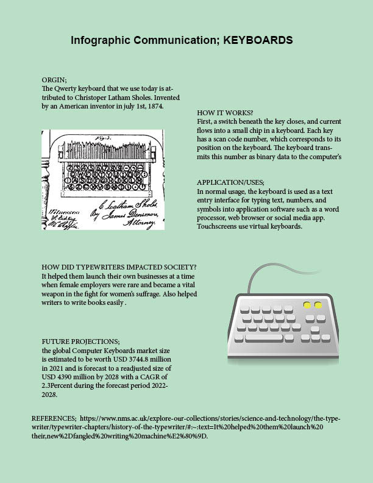

Sujata Ramdam's Portfolio for AENG 110 Class |
|
| Home Print project Photo project Video project | |
|  |
This was an very interesting project for us. This projects expresses interesting communication between keyboard and the whichever device its sending codes to. For this specific project we were asked to use Photoshop and InDesign software. I have explained everything about a keyboard in this project, HOW IT WORKS, ORGINS, and APPLICATION/USERS. Statistical data and a historical timeline were utilized to illustrate the evolution and significance of keyboards in modern communication. |
| Home Print project Photo project Video project | |
| ©2023 Sujata Ramdam> | |